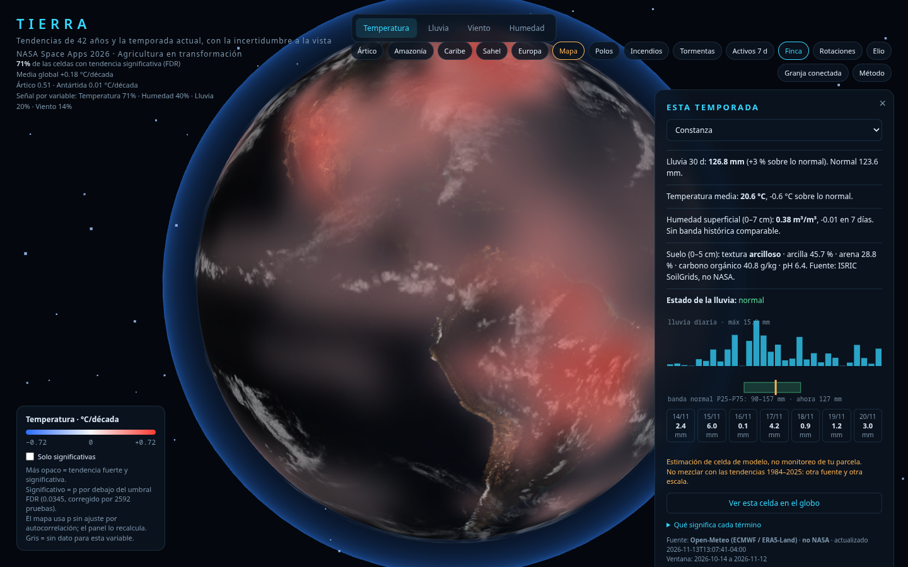
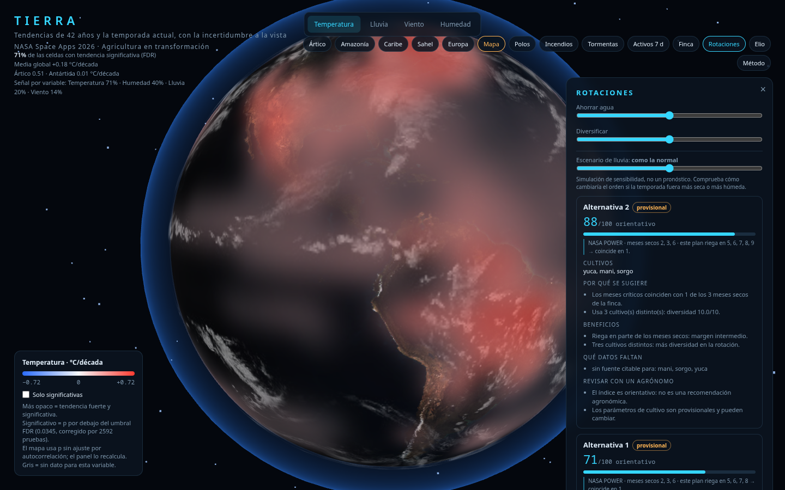

Tierra
Datos de la NASA
para decidir la próxima siembra
Tendencias de 42 años, la temporada en curso y la rotación que conviene.
Con la incertidumbre a la vista, no escondida.
NASA Space Apps 2026 · República Dominicana
TIERRA1 / 11
El problema
El agricultor decide con el clima del año pasado
Su clima no es el del promedio
Dos fincas del mismo país, la misma semana:
Y los datos no llegan a su mano
Los satélites producen capas globales; él necesita una respuesta para su parcela.
+103 %
Azua, lluvia de 30 días sobre su normal
(178 mm vs 88 mm · 13 nov 2026)
+3 %
Constanza, misma ventana
(127 mm vs 124 mm)
Un promedio nacional habría ocultado las dos realidades.
Fuente: Open-Meteo / ERA5 (no NASA), comparado con su propia normal 1991–20202 / 11
Lo que ya funciona
Tres lentes, una decisión
1 · 42 años de tendencia
Globo con 2.592 celdas: Sen y Mann-Kendall por variable, corregido por pruebas múltiples (FDR) e intervalo de confianza.
2 · La temporada
30 días de lluvia, temperatura y humedad frente a la banda normal de la misma fuente, más pronóstico de 7 días.
3 · La rotación
Tres estrategias comparadas: cuántos meses secos toca cada una, qué falta saber y qué revisar con un agrónomo.


Demo real, hoy: globo, fincas, rotaciones y un asistente que dice «no tengo ese dato» cuando falta.
open source · funciona sin internet · sin librerías de terceros3 / 11
El producto completo
De la estimación a la finca conectada
Instalación
Sensores ESP32 de humedad por parcela, electroválvulas de riego y techo motorizado.
Registro de parcelas con imagen aérea.
Automático
Si la humedad baja del umbral, riega. Si llueve, cierra el techo y suspende el riego.
Sin que el agricultor mire el móvil.
Bot real de Telegram
El agricultor escribe /estado, /riego off o /techo on a
@climaxeliobot y el panel cambia en segundos. También admite preguntas
libres en modo API; Elio responde solo con los datos de la finca.
Fotos y GPS
Satélite real recortado sobre cada polígono, cámara de campo simulada y una
foto de hoja que mide color. Cada planta, georreferenciada sobre el mapa.
La app, el mapa, el clima (NASA/ERA5) y el bot son reales.
Los sensores, el techo y la cámara son simulados: hoy no hay hardware instalado.
Funciona hoy · hardware pendiente4 / 11
Por qué nosotros
Lo que casi nadie hace: decir qué no sabe
- No mezclamos fuentes. Comparar una normal de un modelo con un dato de otro mide el desajuste entre modelos, no el clima: vimos cocientes de 0,36 a 4,78 en una misma finca.
- Corrección por pruebas múltiples. Con 2.592 celdas, sin FDR saldrían ~130 «tendencias» falsas por variable.
- Incertidumbre visible: banda normal, intervalo de confianza, p ajustada.
- El asistente no inventa: responde solo con lo que hay en pantalla y cita la fuente.
- Funciona sin internet: 0 librerías externas, 3 MB, 0,6 s de carga.
Esto es lo que un agrónomo o un inversor puede auditar. La confianza se gana así.
127 pruebas automáticas · bot real incluido5 / 11
Modelo de negocio
Suscripción por finca, hardware incluido
Hardware
Kit por parcela: ESP32 + sensores + válvula + techo. Venta o arrendamiento.
Suscripción
Panel, avisos y recomendaciones por finca y mes. Escala con hectáreas.
Servicio
Instalación, calibración y acompañamiento con un agrónomo local.
Precios, coste del kit y margen: por validar con 3–5 fincas piloto.
No presentamos cifras que no hayamos medido.
Pendiente: coste real de hardware y disposición a pagar6 / 11
Mercado
A quién le duele esto
Primero
Pequeña y mediana finca de clima tropical con estación seca marcada:
hortalizas, granos y raíces. Deciden sin datos y pierden agua y cosecha.
Después
Cooperativas y agroindustria que necesitan trazabilidad climática de sus proveedores.
Tamaño de mercado, número de fincas y competidores locales: por validar.
Es el primer trabajo de la siguiente fase, no un dato que podamos afirmar hoy.borrador
Sin cifras de mercado hasta tener fuente7 / 11
Estado
Qué hay hecho, de verdad
2.592
celdas con tendencia
y significancia corregida
3
fincas piloto con
climatología de 30 años
82
pruebas automáticas
+ 7 de navegador
0
librerías externas
en la demo
- Demo funcional y verificada desde un clon limpio, sin internet.
- Repositorio público, con el método y los límites escritos.
Sin clientes todavía: la validación empieza con los pilotos8 / 11
Hoja de ruta
Los siguientes 12 meses
1 · Validación agronómica
Parámetros de cultivo revisados por agrónomos y 3–5 fincas piloto con datos de suelo medidos en campo.
2 · Hardware
Kit ESP32 con riego y techo, probado en una parcela durante una temporada completa.
3 · Producto
Panel para el agricultor, avisos por Telegram y registro de parcelas con dron.
4 · Comercial
Precio validado, primeras cooperativas y métricas de ahorro de agua y de cosecha.
El orden importa: primero medir, después prometer9 / 11
Equipo
Quién lo está construyendo
Datos y climatología
Ruben · climatología NASA POWER de las fincas piloto
Temporada
dnffa · serie reciente, anomalías y caché sin conexión
Interfaz y producto
Oscar · pestañas, tarjetas y experiencia del agricultor
Agronomía y motor
Marlon · motor de rotaciones y criterios de decisión
Calidad
Alison · pruebas, textos y revisión de lo que se afirma
Lo que se suma
Agrónomo asesor, especialista en hardware ESP32 y comercial con red en cooperativas.
Equipo del NASA Space Apps 2026. Los perfiles que faltan son parte de lo que buscamos.
Roles por confirmar con cada persona antes de publicar10 / 11
Qué buscamos
Un piloto, no un cheque en blanco
Tres a cinco fincas y un agrónomo para validar los parámetros.
Con eso medimos el ahorro de agua y la mejora de decisión, y ahí sí
podemos hablar de inversión con números propios.
Lo que no vamos a decir: cifras de mercado sin fuente, ahorros que no hemos medido
ni hardware que todavía no hemos instalado.
Gracias · preguntas11 / 11